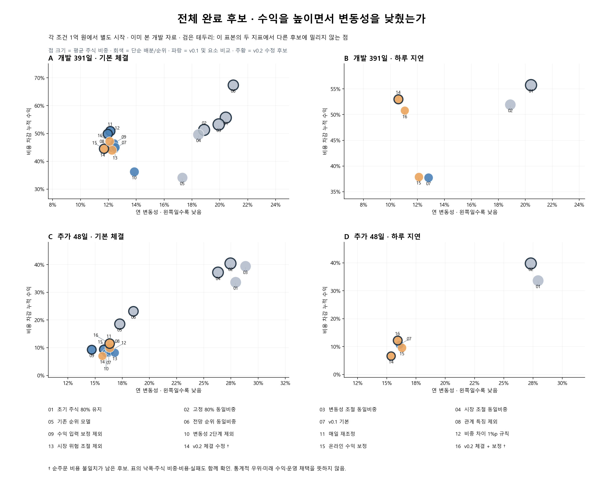

← 포트폴리오 대시보드로전체 후보의 수익·변동성 비교
기본 체결 16개와 하루 지연 6개 후보를 두 기간에서 비교했습니다. 총 44개 완료 결과이며, 중복된 v0.1 기준 결과는 한 번만 표시합니다.
같은 기본 모델을 이겼다고 최종 후보가 되는 것은 아닙니다.
단순 매매 규칙을 포함해 수익·변동성·낙폭·비용을 함께 봅니다. 이미 본 개발 자료의 사후 비교이며, 미래 수익이나 실제 주문 승인을 의미하지 않습니다.
개발: 2024.10.01–2026.03.31 · 391개 판단일
추가: 2026.04.01–06.05 · 48개 판단일
각 조건은 같은 1억 원에서 별도로 시작했습니다. 수익은 원화 누적 순수익, 변동성은 연환산 값입니다. 2026.10.09 수수료 가정과 환전 비용을 반영하며 개인별 소득세는 제외했습니다.

그림을 누르면 원본을 크게 볼 수 있습니다. 점 크기는 평균 주식 비중, 검은 테두리는 이 표본의 수익·변동성 두 지표에서 다른 후보에 밀리지 않는 점입니다. 같은 위험 예산의 비교나 통계 검정은 아닙니다.
† 체결 수정 후보에는 순주문 비용 불일치가 남아 있습니다. 동점 후보 선별 문제도 유지됩니다. 원래 수익 입력 비교군도 후보 선별에는 보정 전망을 사용합니다. 진행 중인 최종 주문 재검사 결과는 이 자료에 포함하지 않았습니다.
개발 · 기본 체결
개발 · 기본 체결 전체 후보| 번호 · 후보 | 순수익 | 연 변동성 | 최대 낙폭 | 평균 주식 | 거래·환전 비용 | 변동성·CVaR 초과 | 계산 실패 |
|---|
| 01 초기 주식 80% 유지 | 55.76% | 20.42% | -20.75% | 82.5% | 0원 | 391일 | 0건 |
| 02 고정 80% 동일비중 | 51.32% | 18.87% | -17.50% | 79.9% | 4,080,856원 | 391일 | 0건 |
| 03 변동성 조절 동일비중 | 53.30% | 19.91% | -19.77% | 85.7% | 4,127,368원 | 356일 | 0건 |
| 04 시장 조절 동일비중 | 49.66% | 18.46% | -18.42% | 81.7% | 4,889,123원 | 354일 | 0건 |
| 05 기존 순위 모델 | 34.16% | 17.30% | -17.66% | 69.0% | 18,176,750원 | 193일 | 0건 |
| 06 전망 순위 동일비중 | 67.42% | 20.95% | -16.61% | 66.9% | 19,461,780원 | 301일 | 0건 |
| 07 v0.1 기본 | 44.61% | 12.45% | -8.16% | 48.8% | 3,994,779원 | 1일 | 0건 |
| 08 관계 특징 제외 | 45.02% | 12.21% | -8.21% | 48.4% | 3,538,748원 | 4일 | 1건 |
| 09 수익 입력 보정 제외 | 46.61% | 12.43% | -7.11% | 32.3% | 7,602,710원 | 9일 | 1건 |
| 10 변동성 2단계 제외 | 36.28% | 13.85% | -8.28% | 51.9% | 3,510,686원 | 16일 | 0건 |
| 11 매일 재조정 | 50.87% | 12.13% | -8.18% | 49.2% | 4,474,748원 | 1일 | 0건 |
| 12 비중 차이 1%p 규칙 | 49.91% | 11.95% | -7.83% | 49.0% | 4,428,033원 | 1일 | 0건 |
| 13 시장 위험 조절 제외 | 45.05% | 12.48% | -7.95% | 49.0% | 3,780,237원 | 0일 | 0건 |
| 14 v0.2 체결 수정 † | 44.08% | 12.26% | -7.61% | 53.4% | 3,346,523원 | 1일 | 0건 |
| 15 온라인 수익 보정 | 44.52% | 11.68% | -8.01% | 48.6% | 4,130,155원 | 6일 | 0건 |
| 16 v0.2 체결 + 보정 † | 47.18% | 12.08% | -9.28% | 49.8% | 3,620,686원 | 2일 | 1건 |
개발 · 하루 지연
개발 · 하루 지연 전체 후보| 번호 · 후보 | 순수익 | 연 변동성 | 최대 낙폭 | 평균 주식 | 거래·환전 비용 | 변동성·CVaR 초과 | 계산 실패 |
|---|
| 01 초기 주식 80% 유지 | 55.76% | 20.42% | -20.75% | 82.5% | 0원 | 391일 | 0건 |
| 02 고정 80% 동일비중 | 51.97% | 18.88% | -17.00% | 79.9% | 4,197,686원 | 390일 | 0건 |
| 07 v0.1 기본 | 37.75% | 12.81% | -8.57% | 46.9% | 10,102,147원 | 10일 | 1건 |
| 14 v0.2 체결 수정 † | 53.01% | 10.57% | -5.74% | 45.5% | 3,171,781원 | 4일 | 41건 |
| 15 온라인 수익 보정 | 37.89% | 12.10% | -8.65% | 44.4% | 11,277,988원 | 14일 | 0건 |
| 16 v0.2 체결 + 보정 † | 50.78% | 11.05% | -8.09% | 40.1% | 3,197,914원 | 9일 | 44건 |
추가 · 기본 체결
추가 · 기본 체결 전체 후보| 번호 · 후보 | 순수익 | 연 변동성 | 최대 낙폭 | 평균 주식 | 거래·환전 비용 | 변동성·CVaR 초과 | 계산 실패 |
|---|
| 01 초기 주식 80% 유지 | 33.66% | 27.93% | -7.42% | 84.0% | 0원 | 48일 | 0건 |
| 02 고정 80% 동일비중 | 40.42% | 27.45% | -6.42% | 80.1% | 451,916원 | 48일 | 0건 |
| 03 변동성 조절 동일비중 | 39.39% | 28.83% | -6.80% | 80.1% | 566,365원 | 48일 | 0건 |
| 04 시장 조절 동일비중 | 37.17% | 26.30% | -6.41% | 74.1% | 597,821원 | 48일 | 0건 |
| 05 기존 순위 모델 | 18.58% | 17.26% | -2.96% | 63.8% | 2,463,203원 | 23일 | 0건 |
| 06 전망 순위 동일비중 | 23.21% | 18.52% | -2.06% | 53.7% | 3,186,033원 | 33일 | 0건 |
| 07 v0.1 기본 | 8.37% | 16.26% | -4.87% | 37.9% | 548,434원 | 5일 | 0건 |
| 08 관계 특징 제외 | 9.36% | 15.78% | -4.76% | 39.4% | 517,646원 | 5일 | 0건 |
| 09 수익 입력 보정 제외 | 9.35% | 14.69% | -3.34% | 43.0% | 881,662원 | 4일 | 0건 |
| 10 변동성 2단계 제외 | 8.00% | 16.01% | -5.23% | 37.9% | 529,327원 | 17일 | 0건 |
| 11 매일 재조정 | 8.27% | 16.27% | -4.98% | 37.9% | 561,466원 | 5일 | 0건 |
| 12 비중 차이 1%p 규칙 | 8.73% | 16.37% | -5.04% | 37.9% | 554,534원 | 5일 | 0건 |
| 13 시장 위험 조절 제외 | 8.22% | 16.80% | -4.88% | 41.1% | 517,072원 | 3일 | 0건 |
| 14 v0.2 체결 수정 † | 7.00% | 15.66% | -5.05% | 39.0% | 558,891원 | 1일 | 0건 |
| 15 온라인 수익 보정 | 10.01% | 16.33% | -4.19% | 52.1% | 709,821원 | 4일 | 0건 |
| 16 v0.2 체결 + 보정 † | 11.54% | 16.33% | -3.91% | 53.7% | 756,604원 | 0일 | 0건 |
추가 · 하루 지연
추가 · 하루 지연 전체 후보| 번호 · 후보 | 순수익 | 연 변동성 | 최대 낙폭 | 평균 주식 | 거래·환전 비용 | 변동성·CVaR 초과 | 계산 실패 |
|---|
| 01 초기 주식 80% 유지 | 33.66% | 27.93% | -7.42% | 84.0% | 0원 | 48일 | 0건 |
| 02 고정 80% 동일비중 | 39.79% | 27.30% | -6.52% | 80.2% | 437,465원 | 48일 | 0건 |
| 07 v0.1 기본 | 10.72% | 16.09% | -4.18% | 37.2% | 916,569원 | 15일 | 0건 |
| 14 v0.2 체결 수정 † | 6.65% | 15.36% | -4.81% | 35.7% | 422,181원 | 8일 | 7건 |
| 15 온라인 수익 보정 | 9.60% | 16.29% | -3.99% | 45.6% | 1,732,027원 | 12일 | 0건 |
| 16 v0.2 체결 + 보정 † | 12.23% | 15.92% | -2.83% | 43.2% | 446,334원 | 5일 | 2건 |